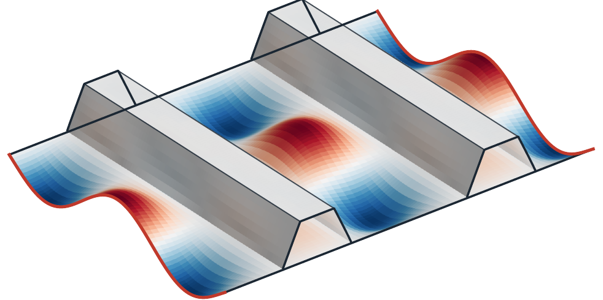

Physics-informed neural networks with a certified GBT check for the buckling of stiffened composite panels
What we tried, what we found and what we concluded, from the first physics-only network (22 Oct) to the cost study for a 5 % target (23 Nov 2026).

Summary
Paper 2 replaces the two weak points of Paper 1, the reduced-bending-stiffness (RBS) plate physics and the Abaqus oracle, by our validated periodic Generalized Beam Theory (GBT) code. Around it we built a physics-informed network and a certified check of every answer. The network gives an instant answer and starting modes; the GBT check turns any start into a load with a label-free error estimate. The data show that the check, not the network, is the main contribution.
Starting point: Paper 1 and the plan for Paper 2
Paper 1 (Compos. Struct. 399 (2026) 120959) predicted local buckling of omega-stringer panels with a hybrid PINN. Two small 1D networks described the skin and foot strips with one sine wave along the panel; the plate energy used the RBS approximation; each panel was trained on its own; Abaqus checked suspicious answers, flagged by a neighbour window of −15 %/+3 %; an MLP on bs and β gave fast answers for one cross-ply lay-up.
Its limits. RBS errors up to 10.8 % vs Abaqus at the tight pitch bs = 124.25 mm; Abaqus as oracle is expensive and outside the framework; the window depends on the order in which panels are asked; one lay-up only, one training per panel.
Aya's plan (3 Nov) and where it stands
- 1Use GBT as the physicsdone
- 2Use the GBT code instead of Abaqusdone
- 3Replace the −15 %/+3 % window by a reasonable checkdone, certified
- 4Make the lay-up part of the toolpartly: 8 lay-up experts and one industrial network; no unseen lay-up
- 5Make it fastpartly: 7.4 s vs 10.7 s; the instant answer needs labels
Two rules were fixed from the start: the network must stay a PINN (physics loss, labels only as support), and every answer may depend only on the design itself.
Research path at a glance
22 Oct – 23 Nov 2026The instant answer moved between 140 % and 0.24 %; after the GBT check the mean error stayed below 0.5 % in every test.
- 22 Oct, physics only with Adam: 15–140 % on the training panels
- 25 Oct, GBT as teacher: 10–16 %
- 26 Oct, conditioning fixed: 3.65 %, check 0.22 %
- 4 Nov, hybrid loss: 1.42 %, check 0.20 %
- 6–7 Nov, all lay-ups: 7.75 % (check 0.21 %), then 4.7 % with 1000 labels
- 9–10 Nov, 8 experts with 120 labels: 0.24–1.18 %; check 0.11–0.33 %
- 17 Nov, 8 experts with 0 labels: 4.68–11.93 %; check 0.14–0.48 %
- 23 Nov, 5 % target met on all 320 designs with 0 labels, mean 0.45 %
| Stage | Question | Result | Decision |
|---|---|---|---|
| 4 Physics engine | Does GBT remove Paper 1's physics error? | 0.54 % vs 2.53 % mean | GBT is physics and reference |
| 5 Reduced space | Can all designs share one set of coordinates? | POD 0.01–0.02 %; dictionary 0.05–0.27 % | shared POD basis × dictionary |
| 6 Training | Can a network learn modes from the GBT energy? | 15–140 %, then 3.65 % after fixing the conditioning | whitening, decoder, natural gradient |
| 7 Loss | Physics, data or both? | physics: best shapes, biased number | hybrid loss |
| 8 Design space | One network for all lay-ups? | all models stall near 5 % | 8 lay-up experts |
| 9 Experts | How good, with and without labels? | 0.24–1.18 % (120 labels); check 0.11–0.48 % | labels for the number, physics for shapes |
| 10 Network value | Better start than simple alternatives? | saves 2–3 iterations; a copied neighbour as good | focus on the check |
| 11 Check | Safe, fast, knows its own error? | estimate safe in 3800/3800 | certified check with stopping rule |
| 12 Cost | What does a 5 % target cost? | 0 labels for the check; GP needs 80 | check = main contribution |
Physics engine: periodic GBT
3 NovQuestion: does replacing the RBS plate energy by GBT remove Paper 1's physics error?
We used the shear-deformable periodic GBT code of our GBT paper: the whole cross-section (skin, feet, webs, crown), laminated walls with their full stiffness, the true stringer offset, and periodic conditions built into the cross-section analysis, validated against Abaqus for 60 periodic cases. The code was frozen; only bug fixes that keep all validated values were allowed. Test: full GBT at the 22 Abaqus points of Paper 1 (cross-ply, symmetry side, simply supported ends), Abaqus values from Paper 1, Table 2.
| Points | Paper 1 PINN | GBT |
|---|---|---|
| All 22 | 2.53 / 10.80 % | 0.54 / 0.97 % |
| Tight pitch bs = 124.25 mm (4 points) | 8.08 / 10.80 % | 0.89 / 0.97 % |
| Other 18 | 1.29 / 3.54 % | 0.46 / 0.95 % |
One reduced space for all designs
22 Oct – 5 NovQuestion: a network needs the same coordinates for every design, but GBT builds new modes on a new mesh for each design. Can all designs share one set without losing accuracy?
| Try | Result | Kept? |
|---|---|---|
| Modes of one reference panel (quasi-isotropic) | +20 to +130 % on other lay-ups: the mode order changes with the laminate | dropped |
| Energy-weighted POD of the 3 lowest full-GBT modes of 64 panels on a fixed node layout | 241 modes; 0.02 % (symmetry) and 0.01 % (periodic) vs full GBT | kept |
Along the length, the load enters through the eccentric foot, so near the ends the pre-buckling forces reach 5× the mid-length value and many modes are concentrated there.
| Description along the panel | Error | Kept? |
|---|---|---|
| One wave with an envelope (Kantorovich) | 1–13 % | dropped |
| One shape per wavenumber (signature curve) | 4–55 % | dropped |
| Fourier series, 16–24 terms | ≤ 0.1 % | not chosen |
| Dictionary: fixed wavelengths + end splines | 0.05–0.27 % | kept |
For the wider design space of Section 8 the dictionary was refined twice (11 half-waves of 25–1006 mm; 24 end splines over 2.5 bs). One finding kept for the paper: a GBT mode that is 98 % one sine wave in shape can still be wrong by a factor 60 in energy, because the last 2 % carry the stiff membrane and end-zone part. This is why a one-wave ansatz, as in Paper 1, is not enough here.
Training a physics-only network
22 – 26 OctQuestion: can a network learn buckling modes and Ncr from the GBT energy alone, by minimising the Rayleigh quotient of its predicted modes?
| Try | Result | Kept? |
|---|---|---|
| Rayleigh–Ritz loss, Adam | One panel: 0.2 % in 1 min; 8–32 panels: still 15–140 % after 2000 steps | dropped |
| Neural eigen-iteration targets, wavenumber preconditioner, L-BFGS | All slow (e.g. 7.8 % after 300 L-BFGS iterations) | dropped |
| GBT modes as teacher (supervised network, 25 Oct) | 10–16 % on unseen designs; GP 9.3 %; energy on unlabelled designs did not help | dropped |
Diagnosis (26 Oct). The obstacle was numerical conditioning, not the physics: the condition number of K in mode coordinates was 1e9 to 1e19. Three changes fixed it:
- Energy whitening: coordinates in which the strain energy is close to the squared length of the vector. An eigen-iteration then needs 7–13 steps instead of about 150; fitting one design improved from 4.6 % to 0.40 %.
- Function decoder: a linear output layer cannot generalise, because the modes of an unseen design lie 15–24 % (in energy) outside the span of the modes of 45 other designs. The decoder builds each longitudinal function's cross-section vector from the design inputs.
- Natural-gradient training: each outer step does one physics eigen-step for every design, then fits the network to it.
Physics, data or both
3 – 4 NovQuestion: which loss, GBT energy only, GBT labels only, or both (hybrid, as in Paper 1)?
Three networks with identical settings, 320 training → 32 unseen designs (3 Nov), repeated with clean training on 4 Nov: 32 validation designs held out, learning-rate decay, weight averaging, weights chosen on validation, test designs not looked at.
| Physics only | Data only | Hybrid | |
|---|---|---|---|
| Instant number, mean / max | 4.48 / 11.89 % | 1.21 / 4.79 % | 1.42 / 4.35 % |
| Bias of the number | +4.47 % (31 of 32 above) | +0.05 % | +0.55 % |
| Rayleigh quotient of predicted modes (shape quality) | 11.95 % | 22.8 % | 20.1 % |
| Check after 12 steps, mean / max | 0.22 / 1.07 % | 0.14 / 0.82 % | 0.20 / 0.98 % |
- Labels remove the high bias of the number.
- The physics loss gives the best mode shapes; data alone overfits the shapes (training 11.8 % vs unseen 18.9 % in the first test).
- The spread of an ensemble of the three numbers did not predict their error (correlation 0.02), as in Paper 1; so an ensemble cannot be the check.
A wider design space: lay-up experts
5 – 8 NovQuestion: can one network cover Paper 1's design space (bs 124.25–285.5 mm, β up to 3.5, symmetry and periodic sides) for any lay-up, with the lay-up as input (38 inputs)?
| Try | Result |
|---|---|
| Hybrid network, 223 training designs (pilot) | 7.75 % mean, 29.8 % max; training 1.2 %: overfitting |
| Same with 1000 labelled designs | stalls at about 4.7 %; training 1.3 % |
| Plain data models on the same 1000 labels: MLP ensemble, GP, gradient boosting | 5.0–6.7 % mean, about 28 % max: no better than the network |
| Same data models on realistic (industrial) lay-ups only | GP 0.77 % mean, 4.2 % max |
The stall is not a weakness of the network: random ply-by-ply lay-ups (unbalanced, few 0° plies) are hard for any model, while lay-ups that follow design rules are learnt well. Even so, the 12-step check reached 0.21 % on the same hard designs.
Results of the eight experts
7 – 17 NovQuestion: how accurate are the experts, with 120 labels and with none?
What does the network add?
9 – 17 NovQuestion: the check starts from the network's predicted modes. Is that start better than simple alternatives that need no network?
| Try | Result | Kept? |
|---|---|---|
| Copy of the nearest labelled design + a physics-trained correction network | Equal to the copy with 120 labels, slightly worse with 10 | dropped |
| Neighbour modes stretched to the new length (harmonic coordinates) | Same as the copy on average; numerically unstable in 1–3 designs | dropped |
| Neighbour modes and network modes together | Worse than the neighbour alone | dropped |
| Industrial network (38 inputs) vs its nearest labelled design | Network better in 22 of 45 designs at 5 steps, 16 of 45 at 12 | equal |
| Predictor | MAC with GBT mode 1 | Half-wave number exact |
|---|---|---|
| Network, 0 labels | 0.39 | 39 % |
| Network, 120 labels | 0.40 | 44 % |
| Copy of the nearest of 120 labelled designs | 0.29 | 57 % |
| Check after 12 steps (network start) | – | 99.4 % (318 of 320) |
The network's modes are closer to GBT in shape than copied ones, but a single predicted mode mixes the lowest modes (often only 2–5 % apart), so the network alone does not get the half-wave number; the check does. One iteration costs about 0.17 s and the fixed cost of a check is about 5 s, so even a perfect start would save at most about 1.5 s.
What we hoped at the start
- instant Ncr from physics alone, no labels
- accurate mode shapes
- one network for every lay-up
What the data showed (23 Nov)
- instant Ncr: needs 120 labels; one expert per lay-up
- modes: a useful start, 2–3 iterations saved
- check: 0 labels, error estimate, 5 % met on all 320 designs
The certified check
10 – 23 NovQuestion: the check replaces Paper 1's −15 %/+3 % window. Can it be safe, reasonably fast, and tell its own error?
How it works. For a new design, the GBT stiffness and geometric matrices are built in the shared reduced space; a block eigen-iteration (LOBPCG, 8 vectors) starts from the network's modes. Every iterate gives a load above the true one in that space (an upper bound).
| Try | Result | Kept? |
|---|---|---|
| Pre-buckling state on a 4× coarser mesh | Check at 36–53 % of the full-GBT time, but the load dropped by up to 0.11 % for industrial lay-ups, so no longer always an upper bound | dropped |
| Exact pre-buckling state | 63 % (5 steps) to 76 % (12 steps) of the full-GBT time; never below full GBT | kept |
| Cheaper parts: coarser meshes, pre-buckling in the reduced space, single precision | At most about 0.3 s saved | dropped |
| Kato–Temple lower bound (two-sided bracket) | 14 % wide after 5 steps, 2.9 % after 12; costs more than the check itself | dropped |
| Relative residual of the current mode as error estimate | Never below the true error; 3–11× conservative (median) | kept |
Cost of a 5 % accuracy target
23 NovQuestion: as in Paper 1's count of Abaqus calls, what does it cost to give every design an answer within 5 % of full GBT?
320 unseen designs (8 lay-up/side combinations × 40). The check stops when its estimate is at most 5 %; if it never gets there, the design gets a full GBT solution. Totals over all 8 combinations; full-GBT solves include labels.
| Method | Full-GBT solves | Offline time | Time per design | Error, mean / max | Upper bound |
|---|
Side studies that set the scope
9 – 23 Nov13.1 Constant cell width (16 Nov)
The periodic condition keeps the cell width constant, so the skin cannot expand sideways (found while checking the formulation, 9 Nov). Full GBT with and without this transverse compression, periodic, β = 1.5:
| Lay-up | bs = 150 mm | bs = 285.5 mm |
|---|---|---|
| Cross-ply | +2.8 % | +4.0 % |
| Quasi-isotropic | +31.7 % | +24.9 % |
| 0°-rich | +21.4 % | +25.1 % |
| ±45° | +160 % | +100 % |
Decision (Aya): keep the constant width, as in the validated GBT code and the Abaqus models of both papers (conservative); state it clearly in the paper.
13.2 Post-buckling and imperfections (18–21 Nov)
Koiter's initial post-buckling analysis was added to the GBT code and checked against Paper 1's Abaqus Riks cases. Screens of 40 designs of the expert space and 96 realistic designs (L 500–750 mm, stringer height 20–35 mm) with mode-shaped imperfections of 0.1–1.0 mm found no imperfection-sensitive design; a non-linear GBT path for the three closest designs stayed stable up to 1.6 times the buckling load. Decision (Aya, 23 Nov): not part of this paper.
Conclusions, limits and next steps
14.1 Conclusions
- GBT as the physics removes Paper 1's RBS error (0.54 % vs 2.53 % at Paper 1's Abaqus points) and makes Abaqus unnecessary.
- A shared reduced space (POD basis × longitudinal dictionary) gives every design the same coordinates within 0.05–0.27 % of full GBT; this is what makes one network per lay-up possible.
- A PINN trains on the GBT energy only after the conditioning is fixed (energy whitening, function decoder, natural-gradient steps). Without labels it learns the mode shapes but not an unbiased number; 120 GBT labels make the instant number accurate (0.24–1.18 %).
- The certified check replaces the −15 %/+3 % window: an upper bound in the reduced space, independent of the order of designs, with a label-free error estimate that was never below the true error. It meets a 5 % target on all 320 unseen designs without labels.
- Compared honestly with simple alternatives, the network's start saves only a few iterations, and with few labels a GP predicts the number better. The main contribution is therefore the GBT engine with the certified check; the network adds the instant answer and the mode shapes.
14.2 Limits
The check takes 63–76 % of a full-GBT solution, mostly for building the design's matrices; the error estimate covers only the iteration error; constant cell width; simply supported ends; β ≥ 0.75; four lay-ups plus the industrial set, no unseen lay-up.
14.3 Next steps
Choose the journal; write the paper from this draft; optional: label study on a second lay-up; faster assembly of the design's matrices.
Set-up of the study
| Item | Value |
|---|---|
| Panel | omega-stringer panel, periodic cell, simply supported loaded ends |
| Design inputs | stringer pitch bs = 124.25–285.5 mm, aspect ratio β = a/bs = 0.75–3.5 |
| Lay-ups (skin / stringer) | cross-ply [0/90/0/90]s / [0/90/0/90/0/90/0]; quasi-isotropic [45/−45/0/90]s / [45/−45/0/90/0/−45/45]; 0°-rich [45/0/−45/0]s / [45/0/−45/0/−45/0/45]; ±45° [45/−45/−45/45]s / [45/−45/45/−45/45/−45/45] |
| Side conditions | symmetry line (half pitch) and periodic cell (two pitches) |
| Data per expert | 152 training/validation designs (first 120 can carry labels), 40 unseen test designs |
| Reduced GBT space | shared POD basis (241 modes) × dictionary (11 half-waves, end splines over 2.5 bs) |
| Network | inputs bs, β; outputs 8 candidate modes and Ncr; 1.7–2.9 h training per network |
| Check | LOBPCG with 8 vectors, energy-metric preconditioner, exact pre-buckling state, stopped by the residual estimate |
| Truth for scoring | full GBT solution of each test design |